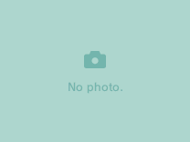

Controlos de Botão
Controlos por toque


Sistema de Páginas
Os ícones no tema Nintendo DSi estão divididos em páginas. com um máximo de 40 ícones por página. Podes mudar de páginas usando os botões & .
Se os Botões de Ombro (Gatilhos) não funcionarem, use os botões SELECT + para fazer o mesmo que os botões de ombro (gatilhos).
- Carrega no botão na secção mais à direita para saltar para o último ícone na página.
- Carrega no botão na secção mais à esquerda para saltar para o primeiro ícone na página.
Se os Botões de Ombro (Gatilhos) não funcionarem, use os botões SELECT + para fazer o mesmo que os botões de ombro (gatilhos).
Imagem personalizada do ecrã principal

O TWiLight Menu++ suporta a exibição de fotos personalizadas no ecrã principal, tal e qual o Menu Nintendo DSi oficial. No entanto, em vez de usar uma foto da aplicação Nintendo DSi Camera, podes usar uma imagem PNG a teu gosto na pasta sd:/_nds/TWiLightMenu/dsimenu/photos
- Largura máxima: 208 pixeis
- Altura máxima: 156 pixeis
Menu SELECT
Ao carregar no botão SELECT no tema Nintendo DSi, irá abrir o Menu Clássico DS por defeito. No entanto, nas Definições do TWiLight Menu++, tu podes mudar isso para que abra o Menu SELECT, um menu miniatura incluído no tema. Aqui estão as opções incluídas no Menu SELECT.
- Menu HOME: Nos sistemas Nintendo DSi e Nintendo 3DS, esta opção irá ser visível para voltar para o Menu HOME dos sistemas em questão.
- Definições: Seleccionar isto irá iniciar um menu de definições para o TWiLight Menu++ e os iniciadores incluídos.
- Opções de GamePak: Num sistema DS Original ou DS Lite, é possível iniciar o teu GamePak Slot-2 através daqui. Nos sistemas Nintendo DSi e Nintendo 3DS a funcionar do Cartão SD, podes executar o teu GameCard Slot-1 ou flashcards compatíveis, e/ou troucar qual Cartão SD que o TWiLight Menu++ deve usar.
- Manual: Isto vai iniciar o Manual de uso do TWiLight Menu++. E é o que estás a ler agora mesmo :P